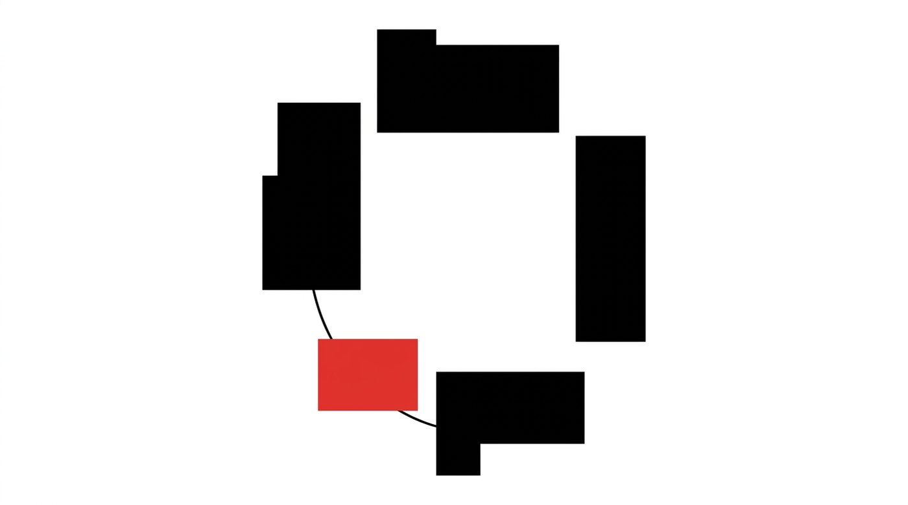
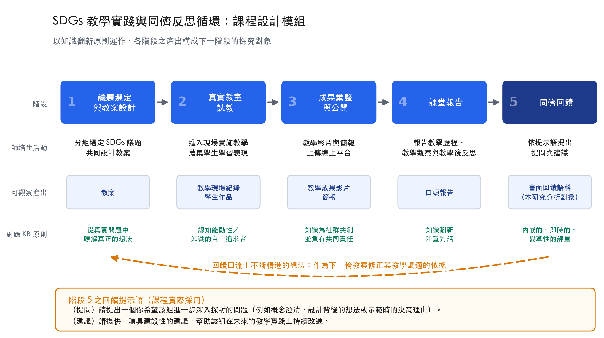

課程以模組形式運作，其可遷移性建立在三項設計條件之上，而非特定的議題內容。

分組選定 SDGs 議題，共同設計一份要真的拿進教室的教案。
進入國小現場實施教學，蒐集學生作品與學習表現。
將教學影片與簡報上傳線上平台，成為社群可檢視的物件。
向全班報告教學歷程、教學觀察與教學後的反思。
依反思提問對該組教學提出提問與具建設性的建議。
師培生依同儕回饋修正教案與教學設計，循環回到起點。五個階段與回饋回流各對應一項知識翻新原則，合計為十二項原則中的六項。

反思要有具體的學生學習表現可依據，模擬教學無法替代。真實教學所產生的意外、時間壓力與學生反應，是反思得以具備證據基礎的前提。
把個人的教學經驗轉為社群可以檢視、質疑與改進的物件。未被公開的教學經驗，無法成為社群共同改進的對象。
反思提問決定回饋包含哪些認知動作，產出因而可以互相比較。反思提問的設計因此不是形式問題。
SDGs 在此模組中的作用，是提供具價值衝突與多重觀點的議題脈絡。若替換為其他具相近複雜度的議題，模組結構仍可運作。
這兩題構成「提問加建議」的二段式結構，未另設要求回饋者陳述教學預期與實際情形之落差的題項。這項工具設計上的實際狀態，在研究結果出現之後成為一個可以明確定位的介入落點。